Copyright © www.meession.com, All Rights Reserved.
密讯信息技术有限公司
密讯CRM中台设计方案
关闭页面
返回首页
使用帮助
咨询
关注
1、为何打开作品后所有图标显示为乱码
本作品中使用的图标主要为FontAwesome 5 Pro字体图标，它是一款支持缩放和修改样式的矢量图标，包含的图标类型基本满足原型设计的需要。如果你是首次使用需要这个字体图标方案，需要在系统中安装FontAwesome 5 Pro字体文件。请注意，如果你之前使用过密讯发布的其它作品，安装过FontAwesome v4.7版的字体文件，同样是需要再另外安装FontAwesome 5 Pro的字体文件的。由于v4.7和v5两个版本的图标类型不完全匹配，在使用过程中你复制的是哪个版本的图标，使用时就要选择对应的字体和类型，否则可能会造成图标无法正常显示。但是多个字体版本可以同时安装和使用，版本之间并不会有什么冲突。详细使用说明可以查看作品目录内的FontAwesome v5 Pro版字体图标使用说明了解。注意！如果你是密讯的永久会员，请通过会员群文件【FontAwesome字体图标方案】目录获取相关文件及使用说明，作品目录内不单独提供。
2、如何使用框架模板和相关页面模板
本作品主要由交互组件、规则文档、系统框架、系统内页等几部分组成。在使用本作品时建议直接在模板上进行修改，同时删除掉无关的页面即可，这样可以尽可能保持相关基础设置统一。另外，作品中提供了多套登录界面和系统框架模板，在作品的框架模板目录中单独提供了拆分过的登录界面和系统框架模板，这样便于大家使用对应的模板创建新的项目原型。直接打开进行编辑就可以了，然后根据需要新建相关的内页，将完整版中需要的页面模板中的内容复制进来就可以了。
除了上述介绍的方法，你也可以自己手动新建.rp文件，然后将对应的框架模板复制到文件中。框架模板中对应的登录界面和系统框架页面已经封装成了母版，只需要打开对应的页面，选中母版然后复制粘贴到你新建的页面中。注意，复制完成以后需要在相关的母版中修改对应的页面链接，否则相关的链接跳转会失效。另外，由于登录界面和系统框架的布局方式不一致，需要修改对应页面样式中的对齐方式。
3、如何修改登录界面和系统框架中的元素
登录界面和系统框架页面已经封装成了母版，可以双击打开母版后进行编辑，或者在母版面板中找到对应的母版双击打开进行编辑，然后修改相关元素即可。如果你对Axure的掌握熟练度并不高，请尽量不要去改动的系统框架的结构，否则可能会导致显示异常。虽然模板中并未使用太复杂的设置方法，但是由于Axure自身的特性，有一些改动导致的显示问题有时候很难排查。
系统框架母版中常见的菜单元素在对应的菜单动态面板中，可以根据需要进行编辑，然后在菜单属性中设置链接的打开方式。
4、关于系统框架适配屏幕分辨率说明
本套作品中的系统框架采用了自适应布局处理，可以在多种屏幕分辨率下达到最佳的兼容性和浏览效果。本作品中的系统框架模板统一按照1600px宽度进行设计，相关内页的设计宽度也是根据这个标准进行设定的。 在模板首页列表中有标识每套框架的最佳适配分辨率，使用对应的最佳适配分辨率浏览时效果最佳。由于每套系统框架的布局形态不一致，所以对应的框架对演示分辨率要求也有一点差异，使用较低的分辨率进行浏览时，可能会导致部分菜单被遮挡或出现横向的页面滚动条。如果演示的电脑分辨率较低，可以在查看演示时通过浏览器的页面缩放功能进行解决，一般浏览器的页面缩放功能的快捷键为：Ctrl+鼠标滚轮。以下是火狐浏览的页面缩放功能，主流浏览器都支持此功能。
关于本作品系统框架自适应的设置方法，以及模板中更多的细节处理，可以参考网站上分享的下面两篇文章。系统框架自适应的设置方法仅作为参考，需要对Axure有基本的了解。再次强调，如果你对Axure的掌握熟练度并不高，不要去改动的系统框架的结构，尽量在现有的框架上修改就可以了。
7、关于中继器表格的修改方式说明
中继器可以用来快速创建表格和列表，而且方便进行修改和调整。模板中的大部分表格组件由表格元件加中继器进行组合，下面示例图片是使用中继器创建的数据列表表格。上面为原生的表格元件区域，下面区域为中继器列表区域。使用时将头部的表格元件编辑好后，选中表格的使用鼠标拖动选中第二列，然后双击中继器元件将选中的表格第二列复制粘贴到中继器中，设置表格的y坐标设置为-1，就可以实现这样的效果了。这样不需要手动去对表格的每一行进行编辑，极大的节省时间。
如果需要对中继器的行数进行调整，可以按照下面的方式进行处理。在中继器的样式设置中还可以对它的样式、间距、布局方式进行设置。在样式中设置交互背景可以实现斑马线效果，设置斑马线需要先清除原表格元件的背景色。
8、关于作品中相关动态图表的说明
本模板中使用的大部分图表控件均来自于Axhub Charts动态图表元件库，它是一套基于Antv，Echarts实现的动态的图表展示解决方案，提供了 折线图、柱状图、条形图、饼图、环形图、面积图等各类常用的图表元件，使用这套图表元件需要对Axure中继器的使用有基本的掌握。另外，你还可以通过开源可视化工具生成需要的图表，然后截图将图表插入到你的原型方案中，可视化工具推荐：阿里Antv、百度Echarts。
9、关于作品中相关元件使用方式说明
为了提升输出效率和便于维护，本作品中相关基础交互组件统一使用静态元素呈现，涉及组件类型：输入框组件、下拉选择组件、单选及复选组件、星级选择组件、下拉菜单组件、开关选择组件、日期选择组件、通知提醒组件、表单验证反馈等。在交示示例页面专用于呈现相关组件的交互样式、状态示例、交互说明，用来供UI和前端人员进行设计参考。如果您在设计中需要使用相关的动态交互元件或更多的元件类型，可以配合《密讯 Web前后端交互原型通用元件库》一起使用。这套元件库中包含各类丰富的Web元件及业务组件，各类基础交互元件同时提供了动态版本和静态示例。
10、如何修改原型演示框架中的标志信息？
密讯发布的作品中的演示框架中都带有网站的标志信息，你可以通过：发布—生成Html—标志 修改或删除标志信息。
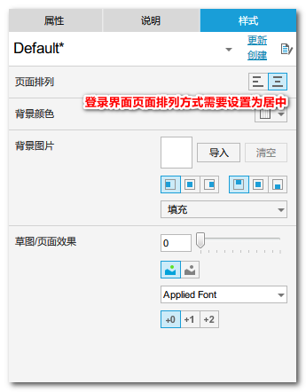
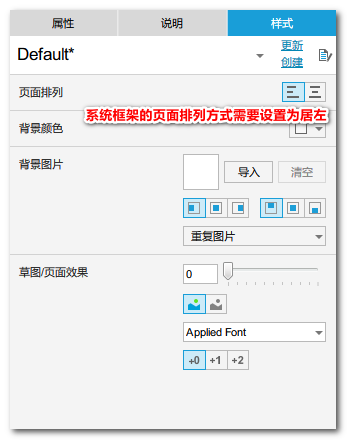
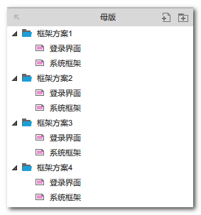
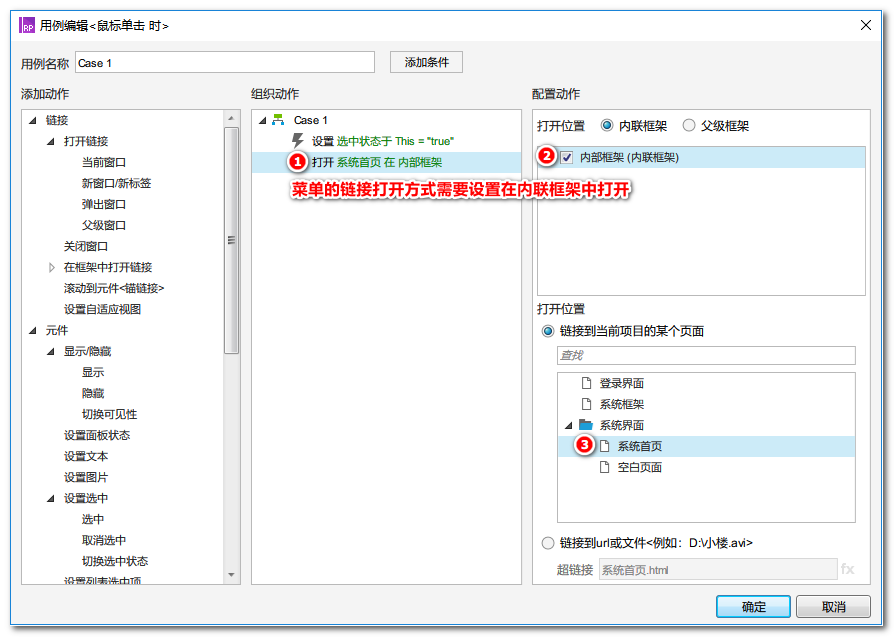
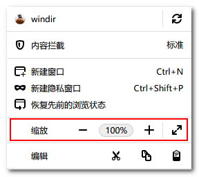
5、关于元件规则备注说明使用方法
作品模板中有大量的规则备注说明，这些说明内容是添加在对应的元件上的。备注说明添加方法：选中元件后在右侧的属性面板中，切换至“说明”面板，在输入框中输入相关的内容。在发布设置选项中可以设置演示时是否显示备注说明，设置方法：发布菜单—生成HTML—元件说明。另外，需要特别说明的是，本作品中有大量的下拉组件中的备注示例中的说明是添加在对应的矩形元件上的，编辑时默认选中的是图标和矩形的组合，需要点击矩形两次才能选中。
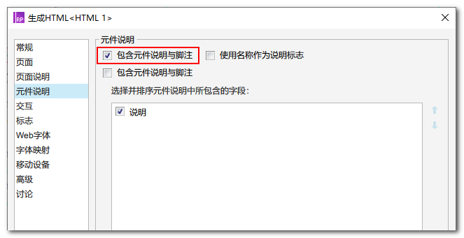
6、关于母版自定义触发事件使用方法
本套作品模板中有很多个在多个功能模块中共用的常用的业务组件整理，大多数共用的弹窗业务组件都使用母版进行管理，并通过母版触发事件在多个页面中调用。母版触发事件添加方法：打开对应的母版后点击Axure顶部的“布局”菜单，选择最后面的“管理母版触发事件”，在弹出的面板中创建事件名称。事件名称创建成功后，将母版拖入到对应的页面中，选中母版后给对应的事件添加交互用例。下图为母版触发事件添加交互用例的界面，“New Event”这个事件名称是在对应的母版中创建的。
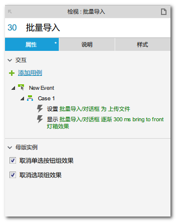
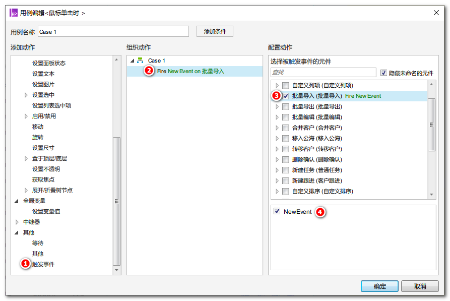
下面的图示是在页面中选中元件“导入”功能按纽后，触发“批量导入”这个母版中触发事件“New Event”上设置的交互用例。最终实现的效果是当在演示中，点击“导入”按纽后显示“批量导入”这个母版中对应的弹窗。使用母版触发事件可以更方便的复用共用的母版组件，并更灵活的设置多种交互用例效果。关于母版触发事件的更丰富的使用方法，建议百度了解。
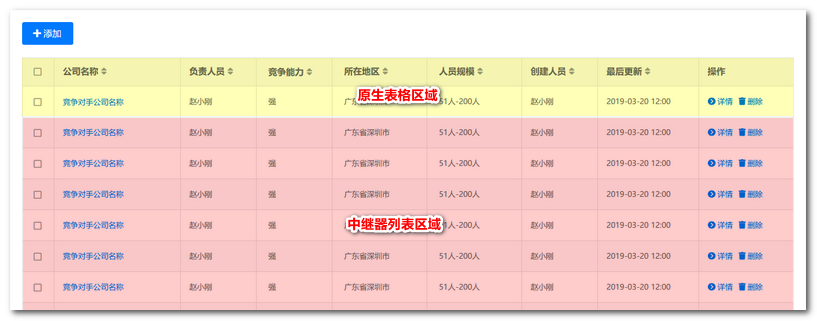
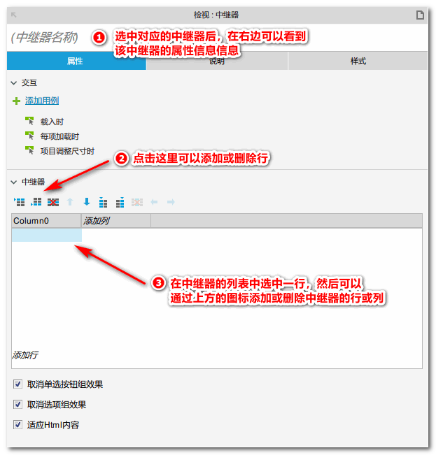
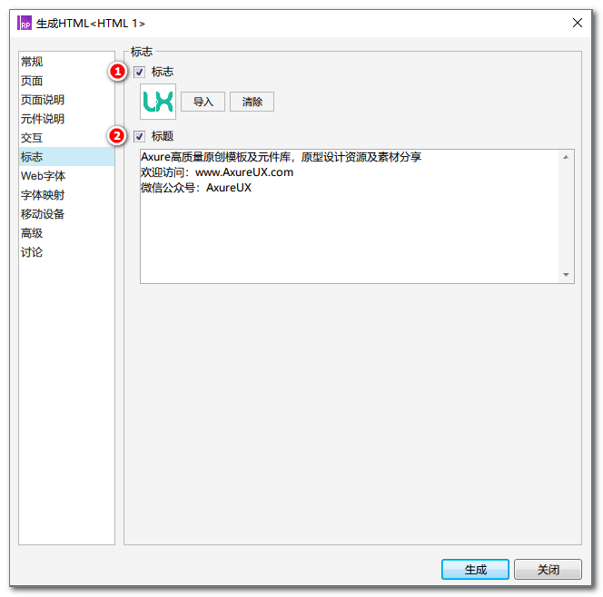
Axhub Charts动态图表元件库下载及介绍